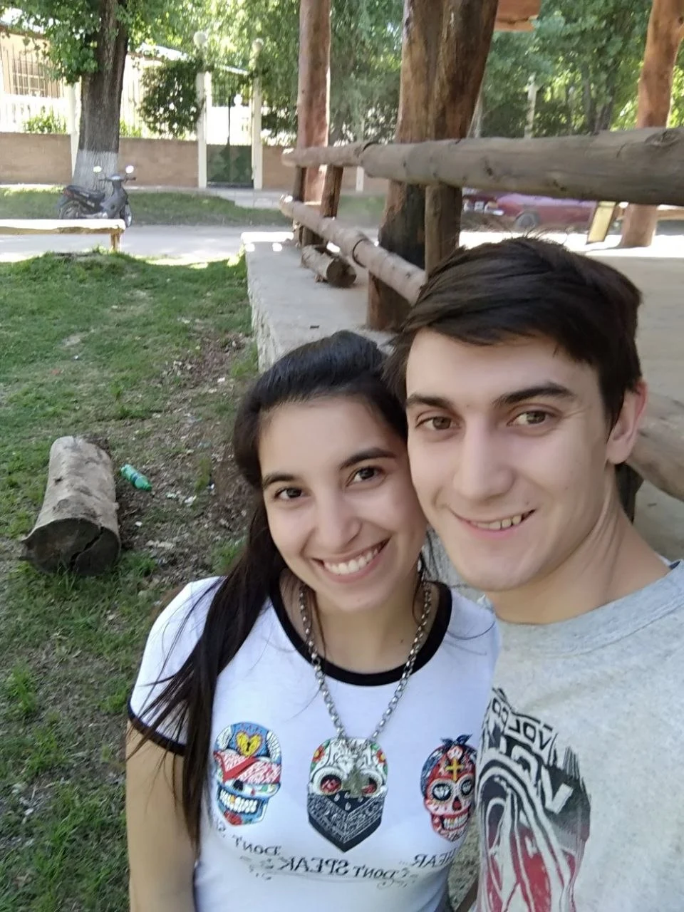
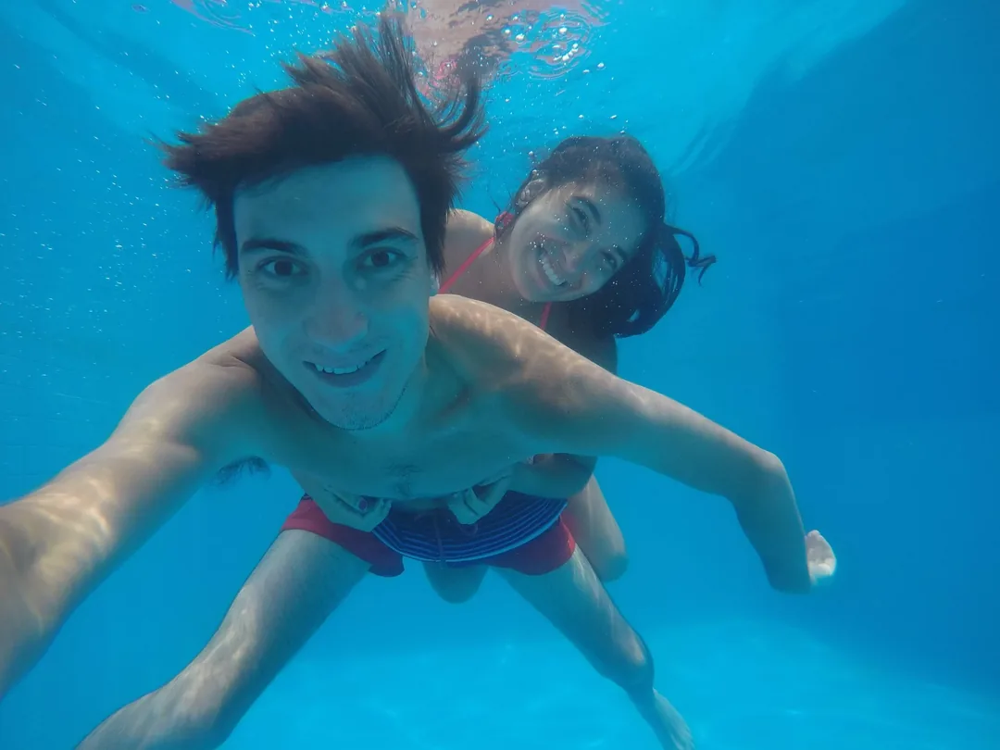
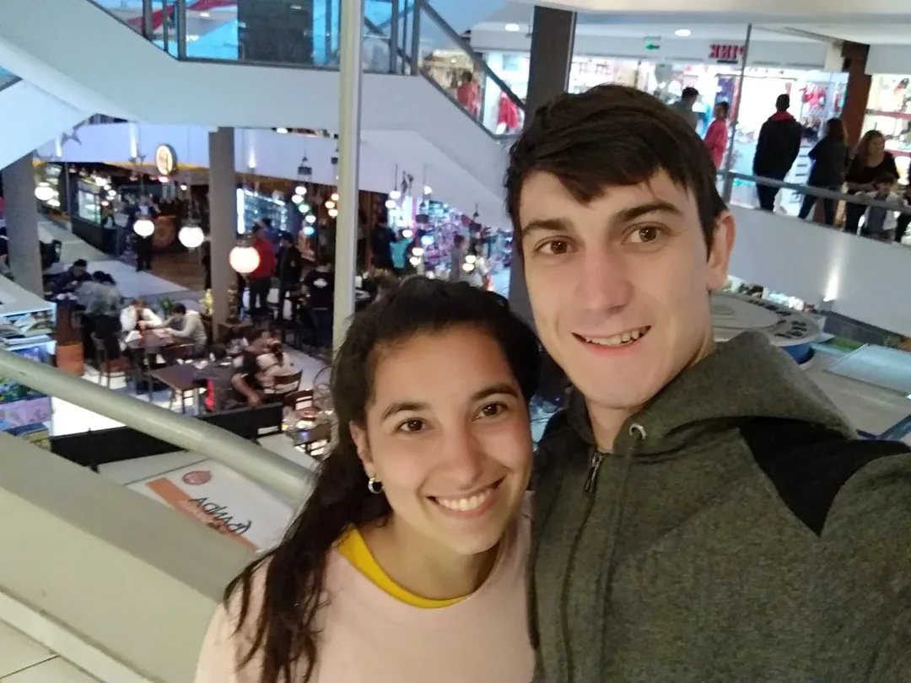

Capítulo III
Los Primeros Años
Descubriéndonos
Todo empezó de una manera simple, y quizás por eso fue tan especial.
Una salida a comer hamburguesas a McDonald's o a Triples, esas que tanto te gustan.
Paseos en moto sin un destino definido, disfrutando del camino más que de la llegada.
Charlas que parecían no terminar nunca y momentos compartidos que, sin darnos cuenta,
se transformaban en recuerdos.
Después llegan las primeras escapadas. Río de los Sauces es uno de esos lugares
que siempre nos encuentra volviendo. Un rincón que se convirtió en parte de nuestra
historia, donde cada visita suma un recuerdo más a todos los que ya compartimos.
Y después llegaron los viajes.
Brasil fue nuestra primera gran aventura solos. Descubrir playas nuevas cada día,
caminar sin horarios, explorar lugares que nunca habíamos visto. Y aunque estábamos
rodeados de paisajes increíbles, hay algo que siempre me hace sonreír cuando lo
recuerdo: nuestros almuerzos.
Mientras muchos buscaban restaurantes o platos típicos, nosotros éramos felices
con nuestros infaltables sándwiches de jamón y queso. Cambiaban las playas,
cambiaban las vistas, cambiaba el mar que teníamos enfrente, pero los sándwiches
seguían ahí, acompañándonos en cada nueva aventura.
Con el tiempo entendí que eso nos representaba bastante bien. Nunca hicieron falta
grandes lujos para ser felices. Alcanzaba con estar juntos, compartir el momento
y seguir descubriendo el mundo a nuestra manera.
Y fue durante esos primeros viajes cuando empecé a darme cuenta de algo que los años
no hicieron más que confirmar: no importaba cuál fuera el destino, porque lo que
realmente hacía especial cada lugar eras vos. ❤️



Cada destino nuevo fue como una promesa que nos hacíamos sin decir una palabra. De Río de los Sauces a México, pasando por el Caribe colombiano y las playas de Camboriú. Pero no importa a dónde vayamos — el paisaje más lindo siempre, siempre, fuiste vos. No importa el lugar. Importa con quién. Y con vos, cualquier lado es casa.

La mayonesa casera que tanto te gusta — felicidad en su estado más puro